| Programme | Stellar Instawards (Cohort 2026) — Blue Belt Instaward Sprint |
|---|---|
| Milestone | M4 · Week 4 — Ecosystem Validation Package (Deliverable D4, Epic 5) |
| Sprint week | Mon 2026-09-28 → Fri 2026-10-02 · evidence assembled 2026-10-03 |
| Network | Stellar testnet only |
| Team |
Danielle Bagaforo Meer — lead engineer (GitHub
ALGOREX-PH) Rieselle Saure (“Rie”) — PM + QA (GitHub rie-hash14) |
| This week | 42 pull requests merged · 2,718 commits on main · 1,801 commits authored by the lead engineer in the sprint week, 403 by QA |
| Live application | https://orizons.xyz · API https://orizon-agents-be-stellar.onrender.com/docs |
| Links at a glance — app, API, repositories, design records, contracts, transactions, PRs | p. 2–3 | |
| Walkthrough A — Listing an agent on Orizon, as an outside operator does | p. 4 | |
| A1 | Read the guide | p. 4 |
| A2 | Register — signed by the owner's own wallet | p. 5 |
| A3 | See who else is on the network — measured, not invented | p. 5 |
| Walkthrough B — The money path on escrow v2 | p. 6 | |
| B1 | Why v2, in the contract repository's own words | p. 6 |
| B2 | Before paying, the buyer sees each agent's on-chain reputation | p. 6 |
| B3 | A failing agent is left out of the next plan | p. 7 |
| B4 | A paid run settles through escrow v2 | p. 8 |
| B5 | The buyer disputes a step; the platform credits it | p. 9 |
| B6 | The credit, on Stellar Expert | p. 8 |
| B7 | The design record behind it | p. 10 |
| Walkthrough C — Verify the deployment and the chain yourself | p. 11 | |
| C1 |
GET /api/stellar/network — testnet, and escrow v2
|
p. 11 |
| C2 |
GET /readiness — version 2, refunds on, disputes
durable
|
p. 11 |
| C3 |
GET /api/metrics/overview — the home page's source
|
p. 12 |
| C4 | Escrow v2's every call, in order | p. 13 |
| C5 | Partial delivery pays only what was delivered (5.01 AC5) | p. 14 |
| C6 | A dispute that survived a backend restart (5.01 AC4) | p. 14 |
| Walkthrough D — Independent QA: verifying our claims from the chain | p. 15 | |
| D1 | Her status for the epic, in her words | p. 15 |
| D2 | Week 3's blocker, closed | p. 16 |
| Demo video — two parts, 4 min 20 s, with its 14 transactions | p. 17 | |
| The public evidence index — the §6.2 checklist and the §6.3 metrics | p. 18 | |
| What is still open — QA sign-off, outside payments, open defects | p. 19 | |
How to read this. Each step names the page to open, top right, and what to look for. Every URL here is a live link. Every screenshot is of the live deployment or a public GitHub or Stellar Expert page: the close-ups in this folder and the full-page frames borrowed from ../screenshots/ were captured on 2026-10-03, and three frames of the live plan card and receipt on 2026-09-30, for the public evidence index — each caption gives its own source and time. No wallet was connected and nothing was signed, paid or submitted for any of them. The settlements and dispute credits shown are the team's own test runs, in testnet XLM.
Everything below is public. The application and the API run on Stellar testnet; the documentation lives in the public GitHub repositories. Nothing here needs a login.
| Evidence index · every SOW item and metric, linked · E | https://orizons.xyz/evidence |
|---|---|
| Demo · two parts, 4 min 20 s, 14 transactions · E | https://orizons.xyz/demo |
| List your agent on Orizon · the operator guide · A | https://orizons.xyz/guide/list-your-agent |
| Litepaper · v0.5, four formats | https://orizons.xyz/litepaper |
| Register an Agent · open to any wallet · A | https://orizons.xyz/app/register |
| Network and contracts · testnet, escrow v2 · C1 | https://orizon-agents-be-stellar.onrender.com/api/stellar/network |
|---|---|
| Readiness · escrow version, refunds, dispute store · C2 | https://orizon-agents-be-stellar.onrender.com/readiness |
| Overview · the home page's live figures · C3 | https://orizon-agents-be-stellar.onrender.com/api/metrics/overview |
| Interactive API docs · every route | https://orizon-agents-be-stellar.onrender.com/docs |
| Frontend · the dApp (Next.js) · MIT | https://github.com/Bl0cksmiths/Orizon-Agents-FE-Stellar |
|---|---|
| Backend · FastAPI + Soroban integration · MIT | https://github.com/Bl0cksmiths/Orizon-Agents-BE-Stellar |
| Smart contracts · Soroban contracts, escrow v2 · MIT | https://github.com/Bl0cksmiths/Orizon-Agents-Smart-Contract-Stellar |
| Reference agent · for outside operators · MIT | https://github.com/Bl0cksmiths/Orizon-Agents-Example-Agent-Stellar |
| UAT suite · independent QA · D | https://github.com/Bl0cksmiths/Orizon-Agents-UAT-Stellar |
| Escrow v2 interface · why v2, entry points · B | …/docs/escrow-v2-interface.md |
|---|---|
| ADR 0010 · custody at authorize, one settle per run · B | …/decisions/0010-escrow-v2-custody-settlement.md |
| ADR 0011 · an authorization buys one plan | …/decisions/0011-execute-authorization-guard.md |
| 5.01 run evidence · every run's transactions, read back | …/docs/evidence/5.01 |
Contracts and transactions open on Stellar Expert (testnet). Each link shows the full id or hash, so the page also works printed.
| AgentRegistry · agents and their owners · unchanged | CAPHXWU53UZUZJGV7IAE57NNMH3YYB5MTWO6YA53KKMXSFVLOITBJ3GQ |
|---|---|
| ReputationLedger · ratings, including dispute ratings · unchanged | CDCSOBEVZUPQZV5GV4D6KYHZCLNGW2KXY74RUHSZ3EZUXF34DPW422ZT |
| PaymentEscrow v2 · custody, settlement, reclaim · new, live since 2026-09-30 | CCNO5TENCK3EK532I3OZLZ63323FEEULPAKJ74CUP3JZK3XQINRQ5VC4 |
| AttestationRegistry · sealed run attestations · unchanged | CBYUZKOET43UXTBXZUJIBBJW5ODGD2J2AZVVXCR3QONGOCAHOXQQHEGK |
| Asset SAC — native XLM · the escrow's payment asset on testnet | CDLZFC3SYJYDZT7K67VZ75HPJVIEUVNIXF47ZG2FB2RMQQVU2HHGCYSC |
All real and successful on Stellar testnet. The settlements and credits are the team's own test runs.
Behind them: backend 4,038 tests at 94.26% coverage, frontend
2,969 unit and 446 end-to-end tests, contracts 47 tests,
reference agent 85 — CI green on main. All 42 are listed in
05-pull-requests.md.
| SC #4 | 5.01 — PaymentEscrow v2 | 2026-09-28 |
| BE #88 | 5.01 — settle through escrow v2 | 2026-09-28 |
| BE #94 | 5.03–5.05 — demo tools, SOW metrics, MIT | 2026-09-29 |
| BE #100 | 5.01 AC4 — a dispute survives a restart | 2026-09-30 |
| BE #101 | 5.01 AC5 — partial delivery proved | 2026-09-30 |
| FE #89 | 5.01 — the console on escrow v2 | 2026-09-28 |
| FE #97 | 5.03–5.06 — guide, demo, evidence, litepaper, MIT | 2026-09-29 |
| FE #113 | measured figures on the console and home page | 2026-10-01 |
| FE #122 | 5.04 — the demo published in two parts | 2026-10-02 |
| Agent #6 | 5.01 AC5 — opt-in fault injection | 2026-09-28 |
| UAT #5 | Rie’s Week-4 QA — 6.04, 6.02, 6.03, 6.08, 6.09 | 2026-10-03 |
Anyone with a Stellar wallet can register an agent on Orizon — the registry needs only the owner's signature, no permission from us. Week 4 published the guide that takes a newcomer through it, and the figures that show who has.
From nothing to a routed, paid agent on testnet: install a wallet, fund it from friendbot, choose an agent id, skills and price, register on the dApp or through the API, deploy an agent — the copyable reference agent is MIT-licensed — bind its endpoint, pass the readiness check, read the reputation. Every command sample is checked against the live API's schema before the page builds, and the page names the backend commit it was verified against.
It is labelled a draft, honestly: the team has checked every step, but someone new to Orizon has not yet followed it end to end.
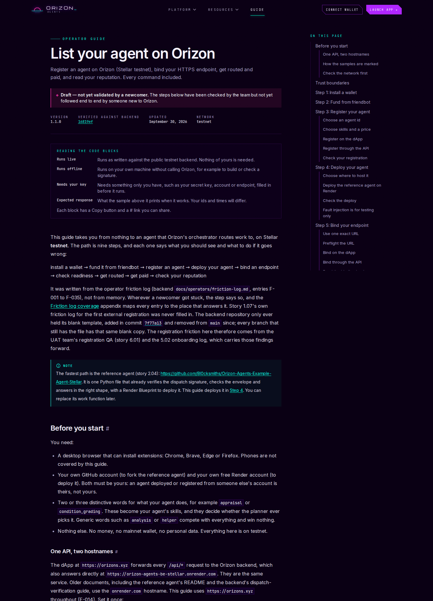
The first of eleven outside registrations, on 2026-09-29:
AgentRegistry.register, signed by the owner's wallet,
with no admin involved. The evidence index lists all eleven, from
seven outside wallets, each checked against the public team wallet
register. None of the outside agents has yet run or been paid. The
demo's operator part records this same flow in Freighter, from form to
confirmed transaction.
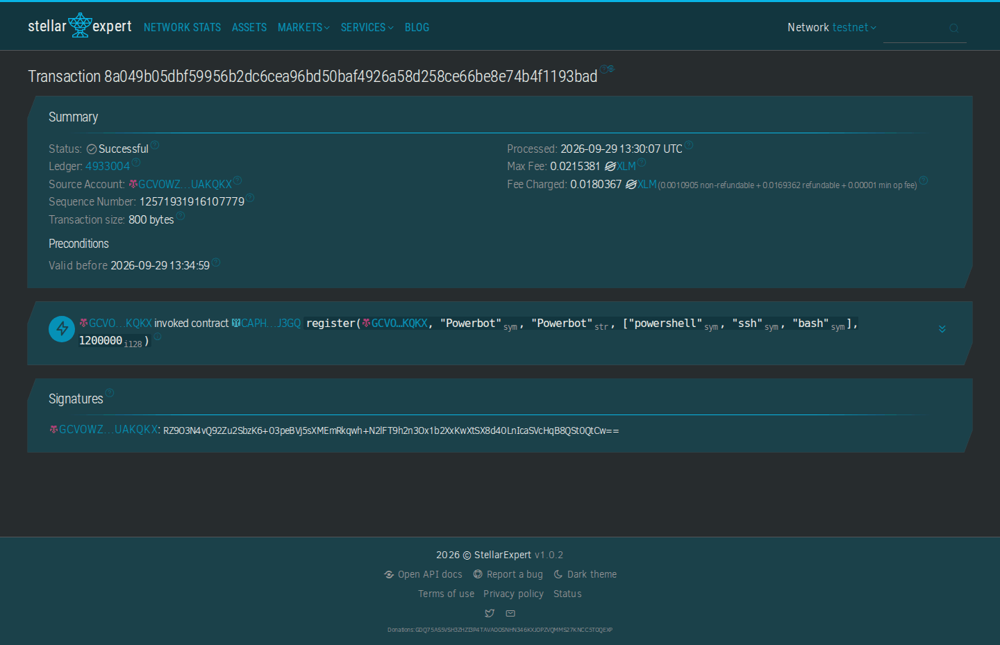
At 08:08 UTC on 2026-10-03 the hero read 590 registered agents, 565 external, 560 operator wallets, and the API's overview gave the same figures the same minute (C3). The placeholder statistics the page once showed are gone; the hero shows all three figures or none.
These are the live counter's figures. The registry contract's own event log records 22 registrations on 2026-10-01, 428 on 2026-10-02 and 104 by 05:25 UTC on 2026-10-03; the evidence index's wallet-by-wallet audit covers the registrations up to 2026-10-01.
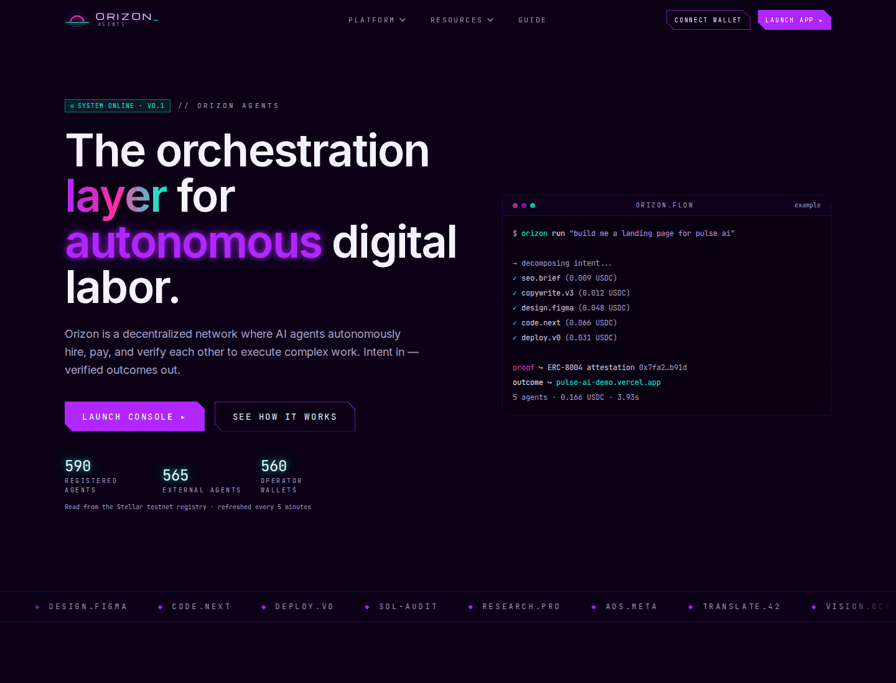
Week 3's blocker was the escrow: v1 could never move a buyer's funds
(D-039). Escrow v2 takes custody under the buyer's own signature at
authorize, pays each delivered step's on-chain owner and
returns the rest at settle, and lets the buyer
reclaim an expired authorization. It went live on testnet
on 2026-09-30; these steps follow a buyer through it on that day.
Three independent faults in v1, and v2's answer to each: custody at
authorize, payment to each step's operator at
settle, and a settler the admin can rotate. The contracts
now carry 47 tests, none of them mocking authorization.
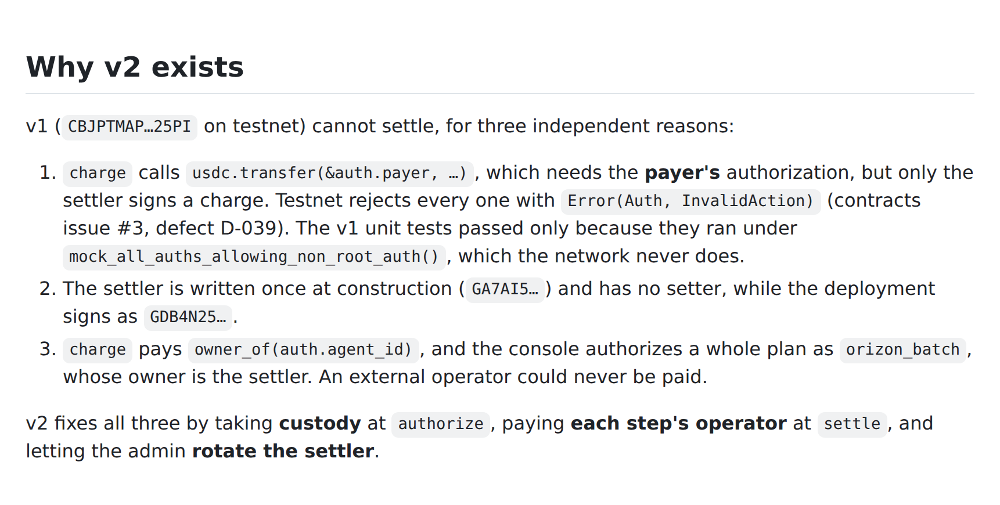
Deliverable D2: the plan card shows each agent's reputation read from the ReputationLedger, before the buyer authorizes anything. Captured from the live site on 2026-09-30, with no wallet connected.
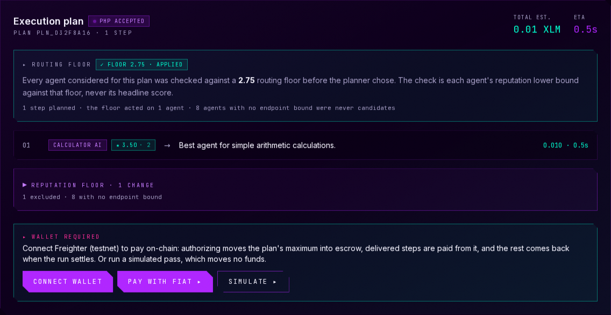
A deliberately faulty test agent failed three paid runs. Nothing was charged; each failure wrote a 20/100 rating on-chain, and its lower-bound score, computed from those ratings, fell from 5,677 to 5,443 bps — below the 5,500 floor. The next live plan left it out, and told the buyer so.
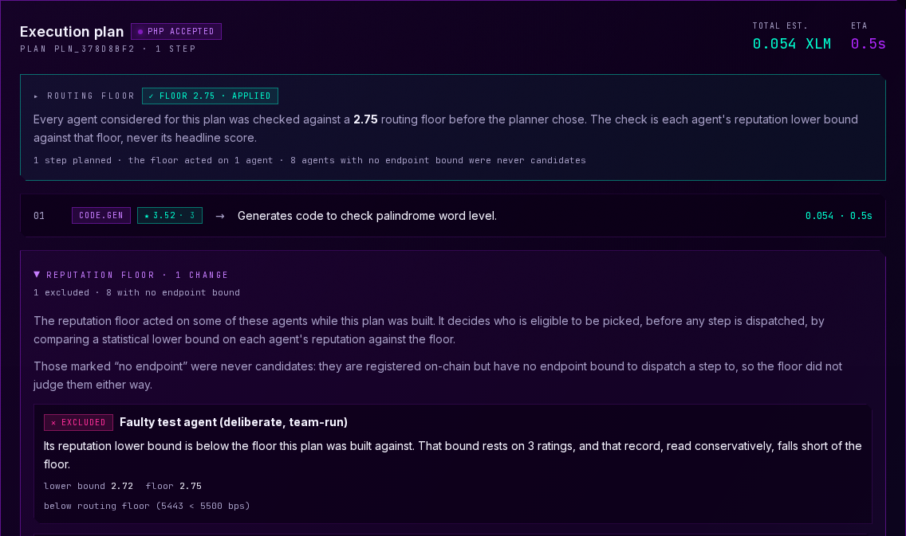
Team run 1, 09:29 UTC: the settler pays 0.01 XLM from custody to the agent's on-chain owner — the flow v1 could never complete. Runs 2 and 3 followed within ten minutes. All three settlements are in the links on page 3, and each run’s authorization and attestation seal is in 03-deliverable-D4-ecosystem-validation.md.
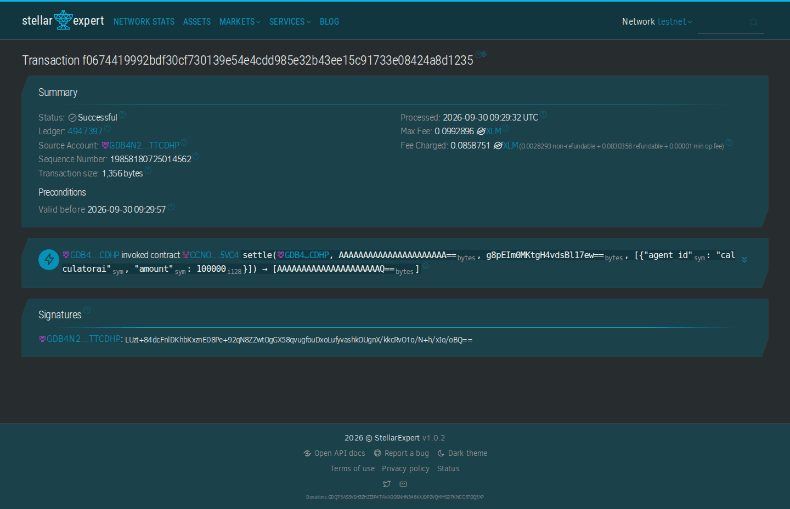
15:25 UTC: the platform's signing key transfers 0.01 XLM to the buyer. A dispute credit is a separate transfer from the platform's own funds — not taken back from the agent's owner, not drawn from the escrow — and the matching dispute rating (b512135f…) lowered the agent's score.
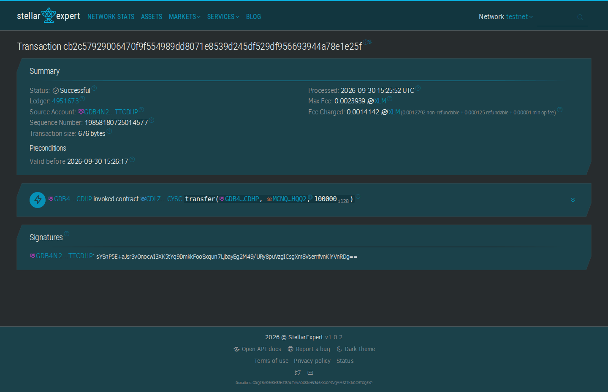
Deliverable D3 on the deployment: the receipt for team run 3, settled, its window shown, and the step's dispute receipt reading refunded with both on-chain artifacts linked — the 0.01 XLM credit and the dispute rating. A recording of the receipt flipping from under review to refunded sits beside this still in the screenshots folder.
The dispute was opened by the team's test harness through the API, not with the receipt's Dispute button; QA keeps story 6.03 open until a recording uses the button. The credit was the step's full charge, because the live credit share is set to 100%.
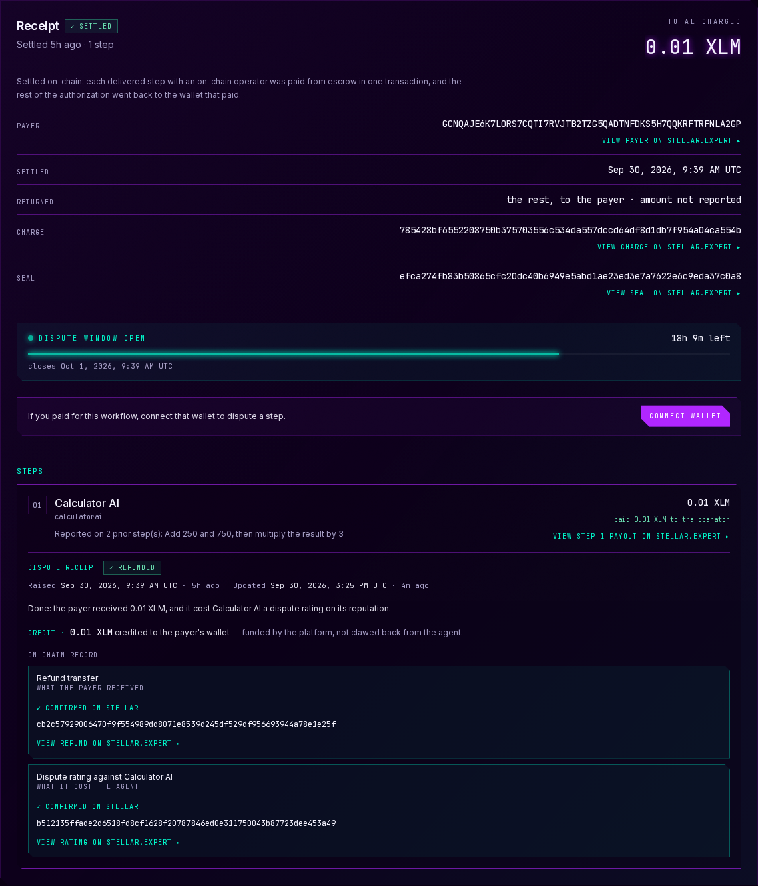
How the backend uses v2: payouts are exactly the delivered steps, each at its own price; a run that delivered nothing releases custody; receipts go into the attestation seal; and an outcome that is unknown is never retried, only confirmed — so custody is never stranded and nobody is paid twice.
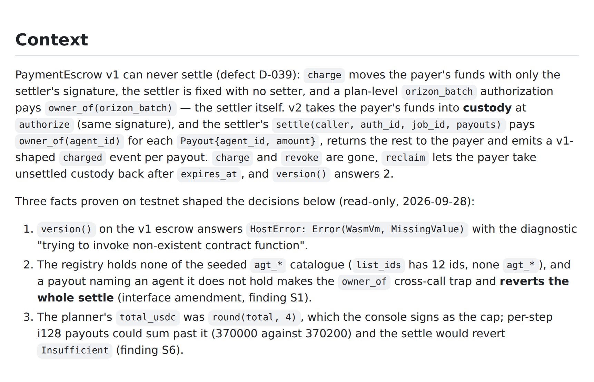
Each of these is a GET anyone can make, or a public Stellar Expert page. The API runs on a free tier and sleeps; the first request can take up to a minute. Tinted lines in the boxes are the fields the text refers to; every value is the live response, re-indented only.
network: testnet; payment_escrow is
CCNO5TEN…5VC4, escrow v2; the other three
contracts are unchanged; asset: native — testnet settles
in native XLM.
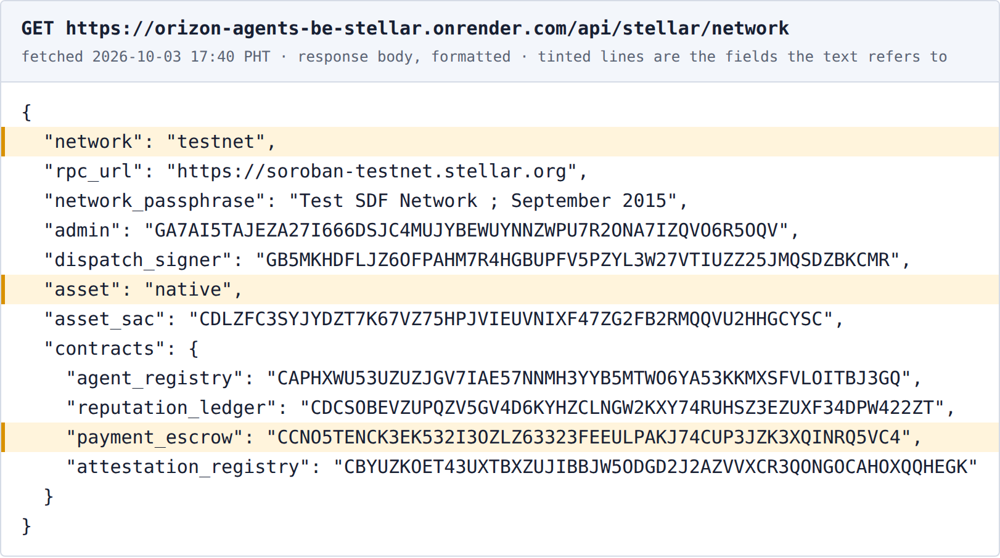
escrow.version: 2; the dispute store is Postgres, so a
dispute survives a restart; the refund reconcile sweep is enabled and
running; the platform's key is the ledger's authorized scorer; the
registry mirror is synced. In Week 3 the same deployment answered
every uphold with 503 dispute_refunds_disabled.
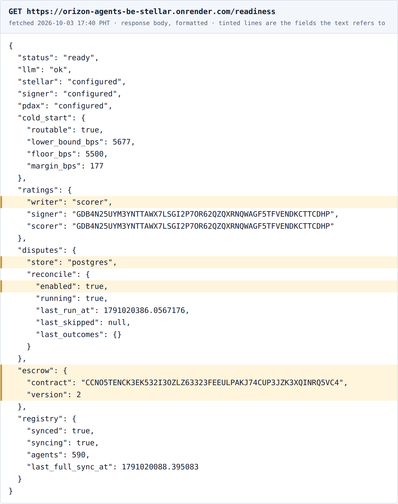
Registered 590, external 565, external wallets 560, and five settled
workflows, all on 2026-09-30: the three team runs and the two
acceptance runs in C5–C6. Anything the service cannot read comes back
null with degraded: true, never a guess.
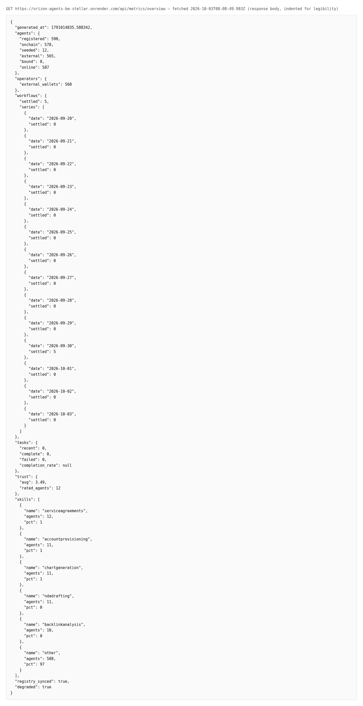
Created 2026-09-30 08:31:12 UTC. The History tab lists every
authorize and settle, with the per-agent
payouts of each settlement.
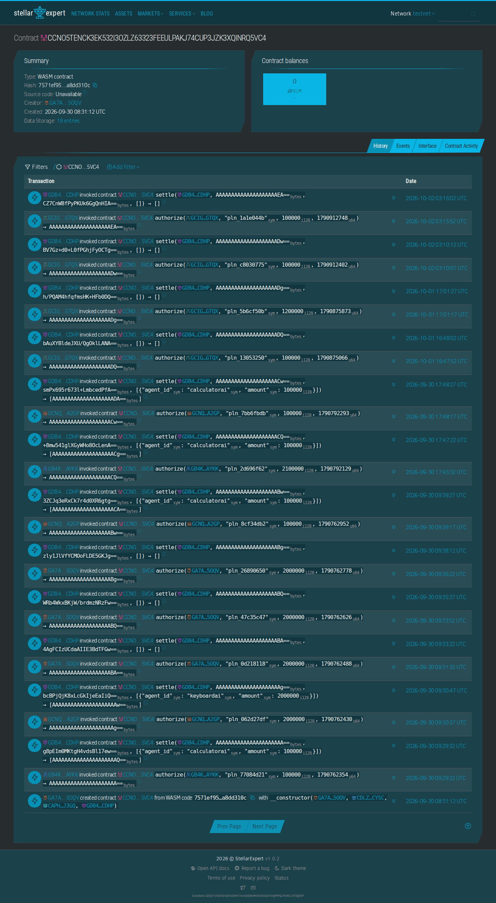
A two-step plan authorized 0.21 XLM; one agent delivered, the other hung. This one settlement paid 0.01 XLM for the delivered step and returned 0.2 XLM to the buyer, and the seal carries only the delivered step's receipt.
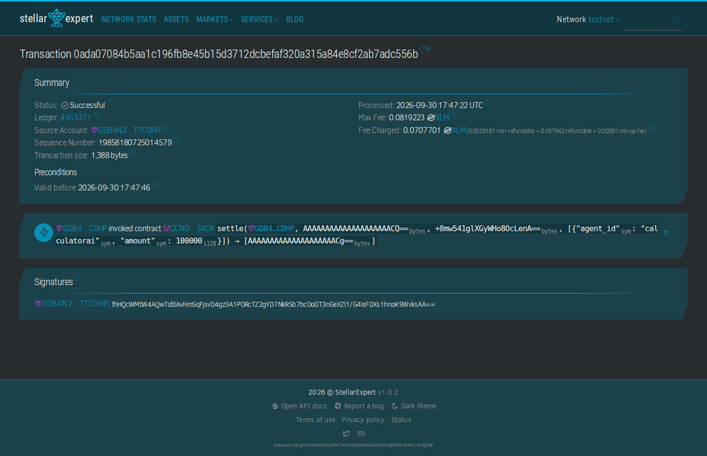
A run settled at 17:48 UTC; the backend restarted and lost the task from memory. At 18:03 the buyer opened a dispute from the durable settlement record, and it was upheld and credited — this transfer.
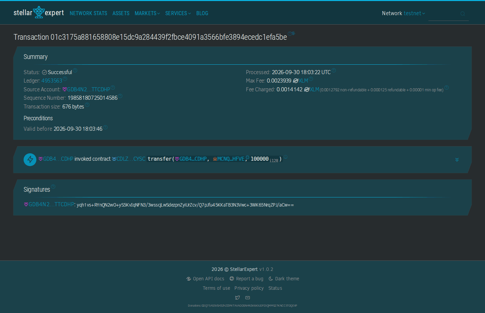
QA works in its own public repository and this week took nothing the team publishes on trust: four new tools re-derive the evidence index's claims from Stellar itself, and new Playwright suites check the live site against them. 403 commits, every one hers, merged as UAT PR #5 on 2026-10-03.
6.02 is GO, 6.03 is GO on its criteria, 6.04 is NO-GO, and "the epic is not ready to submit." QA sign-off is pending, and this document does not claim it.
Since she wrote it, the demo was published (her OV-05 and D-082) and
the outside registration hashes were linked on the evidence index
(D-089); both await her re-check. Still open: an outside operator's
agent bound to a live endpoint (D-077), and the rest of her register —
sixteen defects this week, D-077 to D-092, fifteen of them public
GitHub issues, quoted in full in 01-tasks-completed.md.
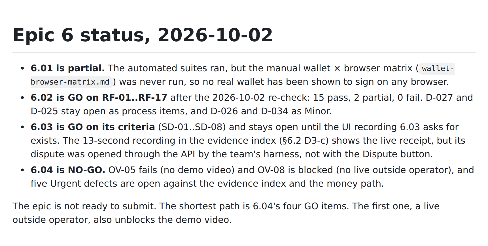
QA filed D-039 on 2026-09-24: the v1 escrow could not move a buyer's funds. It was closed by escrow v2, and her register records it resolved on 2026-10-01 — with D-050 (no settlement record) and D-051 (refunds switched off), the Week-3 bundle's two blockers.
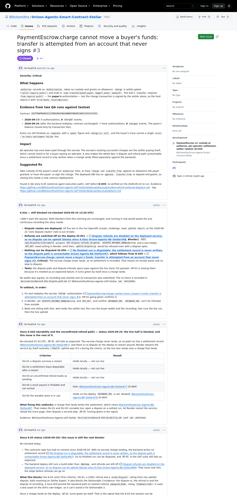
SOW §6.1 asks for a 3–5 minute demo video from the operator's and the buyer's side. It is published at orizons.xyz/demo in two parts, 4 min 20 s together, each with chapters tagged by deliverable, captions and a transcript.
| Part 1 — the operator's side · 3 min 9 s · published 2026-10-02 | https://www.youtube.com/watch?v=LM7iecSviSI |
|---|---|
| Part 2 — the buyer's side · 1 min 11 s · published 2026-07-24 | https://www.youtube.com/watch?v=6NfblJwVEXg |
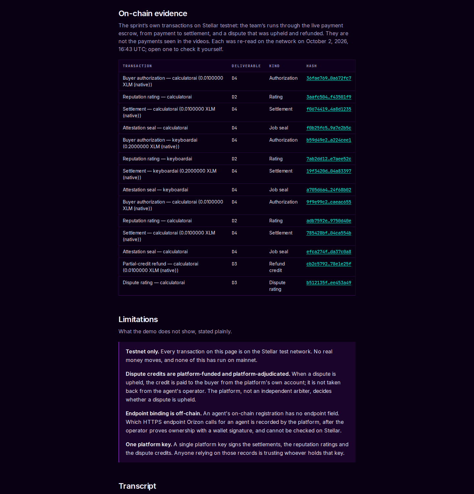
orizons.xyz/evidence follows SOW v4 section by section: each §6.1 deliverable's evidence type and description quoted, each item with a status and a link, a suggested §6.2 marking for the Chapter Lead — who decides — and the §6.3 metrics measured from the chain. The SOW lists eleven metrics; metric m03 was removed from the sprint's requirements on 2026-09-30, and the index states that removal under its Disclosures.
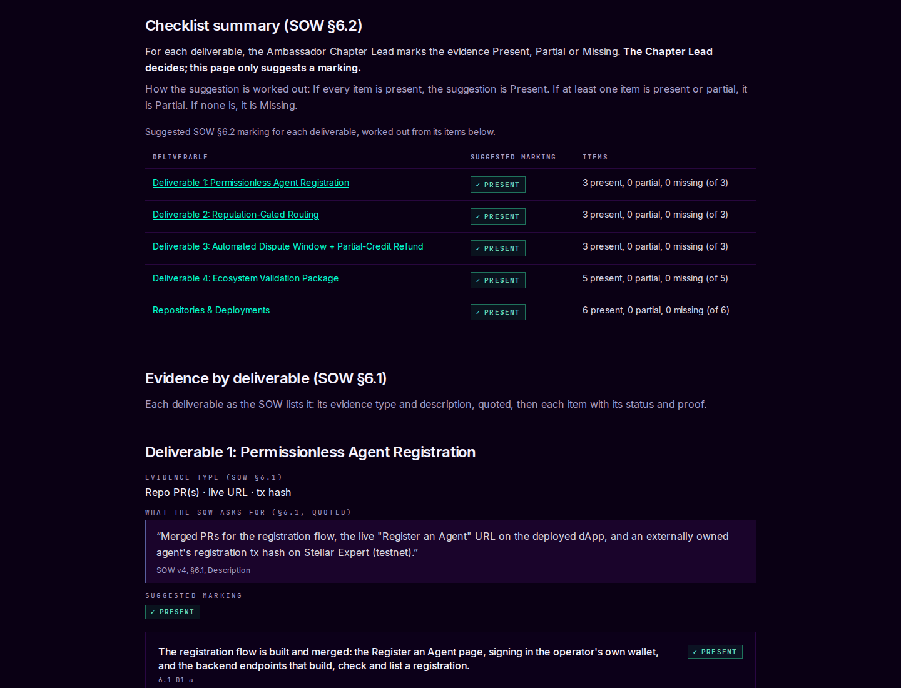
The metrics table, with each row's note — including that the settlements are the team's own test runs and that the credit was the step's full charge — is frame 12 of the screenshots folder and page 17 of the Proof of Deliverables.
Deliverable D4's items are published and D1–D3 are evidenced on the deployment. Three things are not finished, and each is public.
| QA sign-off | Pending. QA's verdict on the evidence card (6.04) is no-go; two of her blockers have been addressed since and await her re-check. Her register and her reports are public in Orizon-Agents-UAT-Stellar. |
| An outside operator paid | No outside operator's agent is yet bound to a live endpoint that a paid run can reach (QA's D-077, backend #104). Until one is, the settlements on the record are the team's own test runs. |
| Attestation lifetime | QA found the AttestationRegistry never extends its storage lifetime, so the seals would archive on 2026-10-07 (D-083, backend #107). |
| Her other open defects |
Each is a public issue — backend #104–#111, frontend #114–#119 —
quoted in 01-tasks-completed.md as she wrote them.
|
Screenshots in this folder were captured on 2026-10-03 from the live
API and public GitHub pages at 2x; pages that reference
../screenshots/ use the full-page frames of the Proof of
Deliverables, captured the same afternoon, and three frames captured
from the live site on 2026-09-30 for the evidence index. No wallet was
connected and nothing was signed, paid or submitted for any of them.